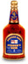

'DRY GINGER' STOPS THE TOT:
An extract from "The
Navy in the News 1954-1991" by Jim Alloway


More tears
were shed over the passing of the tot on 31 July 1970 than fell on the bier of
Nelson. Much of the outpouring of grief that attended the Admiralty's decision
to do away with the rum issue was clearly tongue-in-cheek though. By 1970 the
daily award of an eighth of a pint of 95.5 proof spirit to every man in the
Fleet had long been an anachronism - in a highly technical and sophisticated
Navy no margin of error due to intoxication could be allowed, and the era of
harsh discipline, scarcely fit for livestock in which rum had made life
bearable, was ancient history.
But over 300 years of tradition could not be
allowed to end without due ceremony. In the Persian Gulf a rum barrel was buried
with a headstone to mark the last resting place of a "Good and faithful
servant".
Aboard HMS Dido, off N.E. coast of Scotland,
the last tot was thrown over the side in a sealed bottle - with instructions
inside asking the finder to drink the Navy's health.
The Alma Mater of the Submarine Service at
HMS Dolphin, Gosport provided a gun carriage bearing a coffin flanked by two
drummers led by a piper playing a lament.
And at a mess table in Nelson's last flagship
HMS Victory the final issue was sipped with proper solemnity.
"I am not expecting to rocket up to the Top of the Pops in
the Navy on this," said the First Sea Lord Admiral Sir Michael "Dry Ginger" Le
Fanu. But he made it clear there had been "no political pressures - it is a
naval judgment."
The fiery spirit was first unofficially
introduced into the Navy in 1655, when a British Fleet under Admiral Penn
captured Jamaica. Its long-keeping qualities led to it becoming official issue
in 1731, when the daily ration was set at a half-pint. Nine years later the
Commander-in-Chief West Indies Station, Admiral Vernon, reported: "The
pernicious custom of the seamen drinking their allowance of rum in drams, and
often at once, is attended with many fatal effects to their morals as well as
their health..." When Vernon ordered it mixed with water he gave great offence
to the tars, and since they had nicknamed him 'Old Grog' after the grosgrain
boat cloak he habitually wore on the quarterdeck in rough weather, so they
tagged his watered down rum 'grog'.
As the tradition developed, grog was issued from
the rum tub to leading rates and below. Chief Petty Officers and Petty Officers
received their 'tot' neat - without water - at 1100, an hour before the grog
issue, mixed two to one. Rum in the Royal Navy soon acquired its own patois -
"Sippers", a small taste from a friend's issue;
"Gulpers", one big swallow from another's tot;
"Sandy Bottoms", to see off whatever was left in
a friend's mug;
"Splice the Mainbrace", a double tot for a job
well done, or an invitation on board for free drinks.
Now, CPO's, PO's and Senior NCO's of the Royal
Marines would be allowed to buy commercial spirits in their bars on board ship -
a privilege previously enjoyed only by officers - while junior ratings, no
longer allowed spirits on board, had their allowance of beer increased to three
cans a day. As a fiscal compensation for the end of the rum issue, a capital sum
of �2.7m was paid into a new sailors' fund.

Click bottle for more
information
By kind permission of Jim Alloway (Navy News)